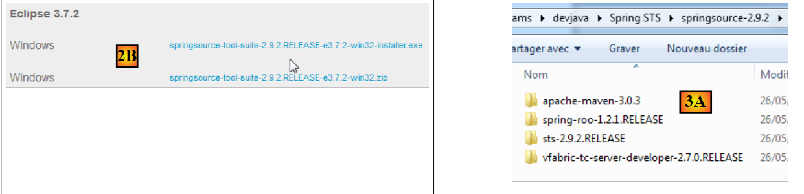
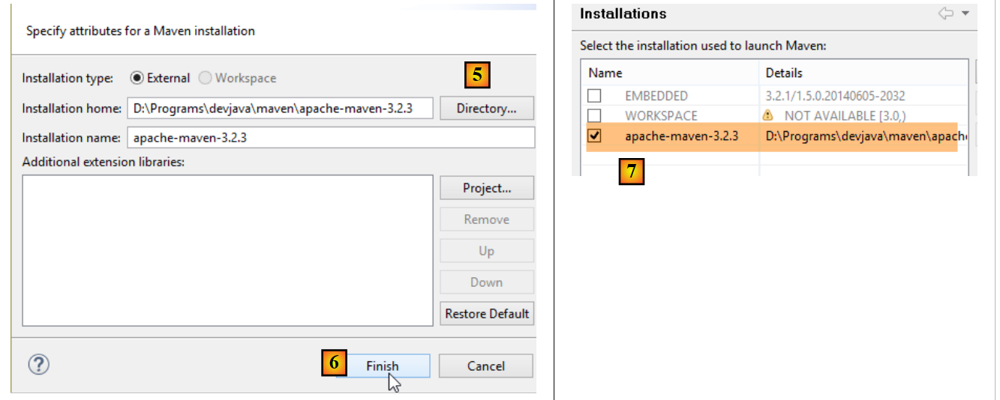
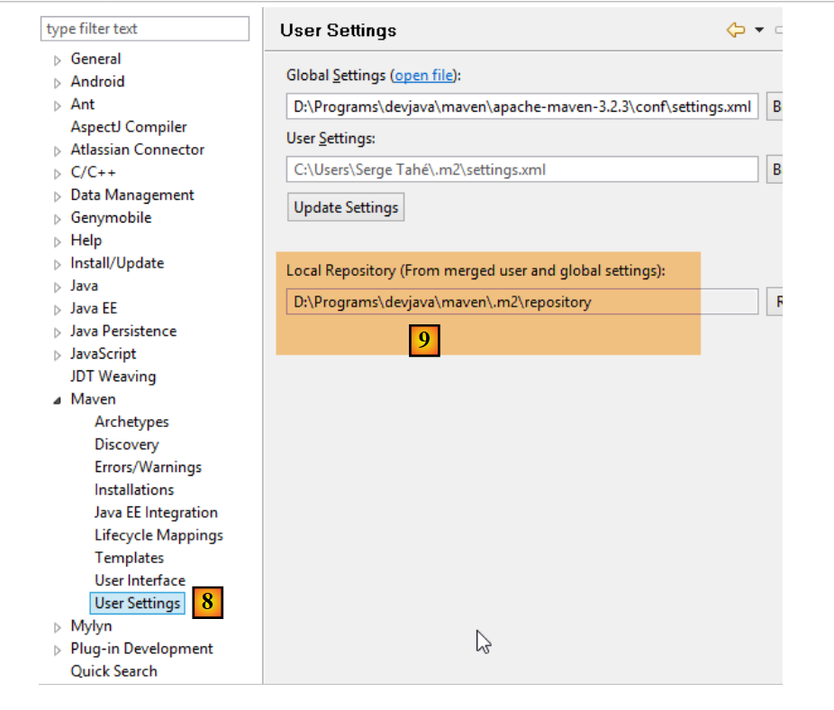
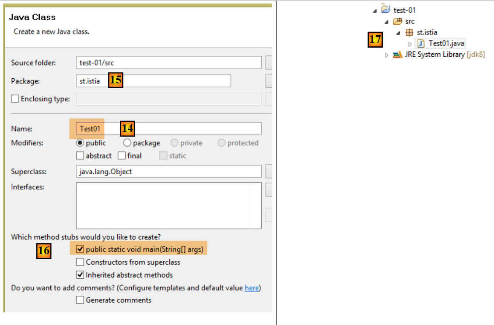
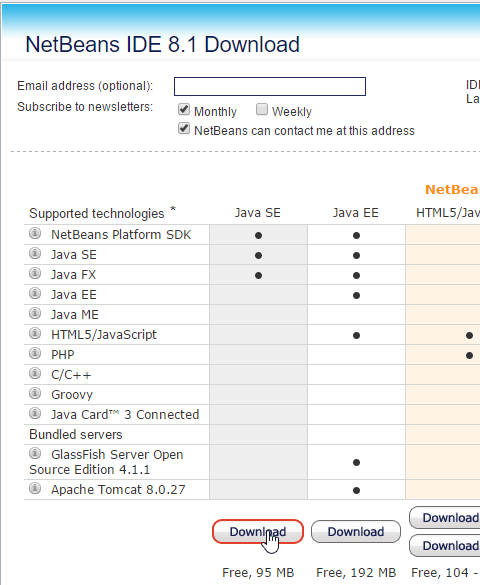

22. الملاحق
نشرح هنا كيفية تثبيت الأدوات المستخدمة في هذا المستند على أجهزة Windows 7 أو 8. تُظهر لقطات الشاشة عمومًا الإصدارات 64 بت من أنظمة إدارة قواعد البيانات والأدوات المثبتة. يجب على القارئ تكييفها مع بيئته الخاصة.
22.1. تثبيت JDK
يمكن العثور على أحدث إصدار من JDK على الرابط [http://www.oracle.com/technetwork/java/javase/downloads/index.html] (أكتوبر 2014). سنشير إلى دليل تثبيت JDK باسم <jdk-install> فيما يلي.
 |
22.2. تثبيت Maven
Maven هي أداة لإدارة التبعيات في مشروع Java وغير ذلك. وهي متوفرة (اعتبارًا من أكتوبر 2014) على الرابط [http://maven.apache.org/download.cgi].
 |
قم بتنزيل الأرشيف وفك ضغطه. سنشير إلى مجلد تثبيت Maven باسم <maven-install>.
 |
- في [1]، يقوم الملف [conf/settings.xml] بتكوين Maven؛
ويحتوي على الأسطر التالية:
<!-- localRepository
| The path to the local repository maven will use to store artifacts.
|
| Default: ${user.home}/.m2/repository
<localRepository>/path/to/local/repo</localRepository>
-->
قد تتسبب القيمة الافتراضية في السطر 4 في حدوث مشكلات لبعض البرامج التي تستخدم Maven إذا كان مسار {user.home} الخاص بك يحتوي على مسافة (على سبيل المثال، [C:\Users\Serge Tahé])، كما هو الحال معي. سنحدد (السطر 7) مجلدًا مختلفًا لمستودع Maven المحلي:
<!-- localRepository
| The path to the local repository maven will use to store artifacts.
|
| Default: ${user.home}/.m2/repository
<localRepository>/path/to/local/repo</localRepository>
-->
<localRepository>D:\Programs\devjava\maven\.m2\repository</localRepository>
في السطر 7، تجنب استخدام مسار يحتوي على مسافات.
22.3. تثبيت STS (Spring Tool Suite)
سنقوم بتثبيت SpringSource Tool Suite [http://www.springsource.com/developer/sts] (أكتوبر 2014)، وهي بيئة Eclipse تم تهيئتها مسبقًا بالعديد من المكونات الإضافية المتعلقة بإطار عمل Spring، بالإضافة إلى إعدادات Maven المثبتة مسبقًا.
 |
- انتقل إلى موقع SpringSource Tool Suite (STS) [1] لتنزيل الإصدار الحالي من STS [2A] [2B].
 |
 |
- الملف الذي تم تنزيله هو برنامج تثبيت يقوم بإنشاء بنية دليل الملفات [3A] [3B]. في [4]، نقوم بتشغيل الملف القابل للتنفيذ،
- في [5]، نرى نافذة مساحة عمل IDE بعد إغلاق نافذة الترحيب. في [6]، تظهر نافذة خوادم التطبيقات،
 |
- في [7]، نرى نافذة الخوادم. تم تسجيل خادم. وهو خادم VMware متوافق مع Tomcat.
يجب تحديد دليل تثبيت Maven لـ STS:
 |
- في [1-2]، قم بتكوين STS؛
- في [3-4]، أضف تثبيتًا جديدًا لـ Maven؛
 |
- في [5]، حدد دليل تثبيت Maven؛
- في [6]، أكمل المعالج؛
- في [7]، قم بتعيين تثبيت Maven الجديد كتثبيت افتراضي؛
 |
- في [8-9]، تحقق من مستودع Maven المحلي، والمجلد الذي سيتم فيه تخزين التبعيات التي يتم تنزيلها، والمكان الذي سيضع فيه STS العناصر التي تم إنشاؤها؛
يجب عليك أيضًا تحديد JDK (مجموعة أدوات تطوير Java) لتشغيل مشروعي Eclipse مع وبدون Maven [1-5].
 |
باستخدام [4]، يمكنك إضافة JDKs (مجموعات أدوات تطوير Java) أو JREs (بيئات تشغيل Java). يمكن لـ JRE تشغيل ملفات .class ولكن لا يمكنها ترجمة ملفات .java لإنتاجها. يمكن لـ JDK القيام بالأمرين معًا. يجب عليك اختيار JDK لأن بعض عمليات Maven تتطلب وجوده.
لإنشاء مشروع Eclipse، اتبع الخطوات التالية:
 |
- في [3]، قم بتسمية المشروع؛
- في [4]، حدد مجلدًا فارغًا موجودًا؛
 |
- في [5]، يتم إنشاء المشروع؛
- في [5-8]، قم بإنشاء حزمة. الحزمة هي مجلد يحتوي على كود Java. يمكن أن تحمل فئتان نفس الاسم إذا كانتا تنتميان إلى حزمتين مختلفتين. داخل المشروع، لا يمكن أن توجد حزمتان تحملان نفس الاسم. لذلك، لا يمكنك استخدام اسم حزمة موجود بالفعل في إحدى تبعيات المشروع. ستستخدم الشركة اسم حزمة يحدد الشركة والمشروع وفروعه المختلفة؛
 |
- في [9]، قم بتسمية الحزمة؛
- في [10]، الحزمة التي تم إنشاؤها؛
 |
- في [11-13]، قم بإنشاء فئة داخل الحزمة التي تم إنشاؤها؛
 |
- في [14]، قم بتسمية الفئة (يجب اتباع قاعدة CamelCase — يجب أن تبدأ كل كلمة في الاسم بحرف كبير متبوعًا بأحرف صغيرة)؛
- في [15]، تحقق من الحزمة؛
- في [16]، حدد المربع. يؤدي هذا إلى طلب إنشاء الطريقة الثابتة [main]. هذه الطريقة تجعل الفئة قابلة للتنفيذ، أي الفئة الأولى التي يتم تنفيذها في المشروع؛
- في [17]، الفئة التي تم إنشاؤها بهذه الطريقة؛
اكتب الكود التالي في الطريقة [main]، والتي تعرض نصًا على وحدة التحكم:
package st.istia;
public class Test01 {
public static void main(String[] args) {
System.out.println("test01");
}
}
 |
- في [18-20]، قم بتشغيل الفئة. عندئذٍ سيتم تنفيذ أسلوبها [main]؛
 |
- في [21-22]، نتيجة التطبيق؛
إذا لم تكن طريقة العرض [Console] موجودة، فاتبع الخطوات التالية [1-4]:
 |
عند استيراد مشروع Eclipse، قد يحتوي على أخطاء. قد يكون ذلك بسبب تكوين غير صحيح للمشروع. لتصحيح الخطأ (إن وجد)، اتبع الخطوات التالية:
 |
- في [1]، قم بتعديل [مسار البناء] للمشروع؛
 |
- في [2]، تم تكوين المشروع لاستخدام JVM 1.5؛
- في [3]، قم بإزالة هذه التبعية؛
- في [4]، أضف تبعية جديدة؛
 |
- في [5]، أضف JVM؛
- في [6]، حدد JVM للجهاز؛
بمجرد الانتهاء من ذلك، احفظ التغييرات ثم انتقل إلى خاصية [مترجم Java] للمشروع [7]:
 |
- في [8]، قم بتوجيه المُجمِّع لقبول جميع ميزات لغة Java حتى الإصدار 1.7 (أو 1.8) بما في ذلك؛
- في [9]، انقر فوق "موافق"؛
- في [10]، يجب ألا يحتوي المشروع المعاد تهيئته على أي أخطاء بعد الآن؛
بالإضافة إلى ذلك، يمكن للمشروع المستورد استخدام ترميز الأحرف UTF-8. اتبع هذه الخطوات لتعيين هذا الترميز في المشروع المستورد [1-4]:
 |
بالإضافة إلى ذلك، قد يكون من المفيد تعطيل التدقيق الإملائي في المشروع لمنع ظهور تعليقات باللغة الفرنسية تحت خط كأنها غير صحيحة. اتبع الخطوات [1-4] أدناه:
 |
22.4. تثبيت بيئة تطوير NetBeans
يتوفر NetBeans على [http://netbeans.org/downloads/].
 |
يمكنك تنزيل إصدار Java SE (الإصدار القياسي) من الرابط أعلاه.
22.5. تثبيت ملحق [Advanced Rest Client] لمتصفح Chrome
في هذا المستند، نستخدم متصفح Chrome من Google (http://www.google.fr/intl/fr/chrome/browser/). سنقوم بإضافة ملحق [Advanced Rest Client] إليه. وإليك كيفية القيام بذلك:
- انتقل إلى [متجر Google الإلكتروني] (https://chrome.google.com/webstore) باستخدام متصفح Chrome؛
- ابحث عن تطبيق [Advanced Rest Client]:
 |
- سيصبح التطبيق متاحًا للتنزيل بعد ذلك:
 |
- للحصول عليه، ستحتاج إلى إنشاء حساب Google. سيطلب منك [متجر Google الإلكتروني] بعد ذلك تأكيدًا [1]:
 |
- في [2]، يتوفر الملحق المضاف في خيار [التطبيقات] [3]. يظهر هذا الخيار في كل علامة تبويب جديدة تنشئها (CTRL-T) في المتصفح.
22.6. معالجة JSON في Java
بطريقة شفافة للمطور، يستخدم إطار عمل [Spring MVC] مكتبة [Jackson] JSON. لتوضيح ماهية JSON (ترميز كائنات JavaScript)، نقدم هنا برنامجًا يقوم بتسلسل الكائنات إلى JSON ويقوم بالعكس عن طريق فك تسلسل سلاسل JSON التي تم إنشاؤها لإعادة إنشاء الكائنات الأصلية.
تسمح لك مكتبة "Jackson" بإنشاء:
- سلسلة JSON لكائن: new ObjectMapper().writeValueAsString(object);
- كائن من سلسلة JSON: new ObjectMapper().readValue(jsonString, Object.class).
قد ترمي كلتا الطريقتين استثناء IOException. إليك مثال على ذلك.
المشروع أعلاه هو مشروع Maven يحتوي على ملف [pom.xml] التالي؛
<?xml version="1.0" encoding="UTF-8"?>
<project xmlns="http://maven.apache.org/POM/4.0.0"
xmlns:xsi="http://www.w3.org/2001/XMLSchema-instance"
xsi:schemaLocation="http://maven.apache.org/POM/4.0.0 http://maven.apache.org/xsd/maven-4.0.0.xsd">
<modelVersion>4.0.0</modelVersion>
<groupId>istia.st.pam</groupId>
<artifactId>json</artifactId>
<version>1.0-SNAPSHOT</version>
<dependencies>
<dependency>
<groupId>com.fasterxml.jackson.core</groupId>
<artifactId>jackson-databind</artifactId>
<version>2.3.3</version>
</dependency>
</dependencies>
</project>
- الأسطر 12–16: التبعية التي تستورد مكتبة 'Jackson'؛
فئة [Person] هي كما يلي:
package istia.st.json;
public class Personne {
// data
private String nom;
private String prenom;
private int age;
// manufacturers
public Personne() {
}
public Personne(String nom, String prénom, int âge) {
this.nom = nom;
this.prenom = prénom;
this.age = âge;
}
// signature
public String toString() {
return String.format("Personne[%s, %s, %d]", nom, prenom, age);
}
// getters and setters
...
}
فئة [Main] هي كما يلي:
package istia.st.json;
import com.fasterxml.jackson.databind.ObjectMapper;
import java.io.IOException;
import java.util.HashMap;
import java.util.Map;
public class Main {
// the serialization / deserialization tool
static ObjectMapper mapper = new ObjectMapper();
public static void main(String[] args) throws IOException {
// creation of a person
Personne paul = new Personne("Denis", "Paul", 40);
// display jSON
String json = mapper.writeValueAsString(paul);
System.out.println("Json=" + json);
// person instantiation from Json
Personne p = mapper.readValue(json, Personne.class);
// person display
System.out.println("Personne=" + p);
// a picture
Personne virginie = new Personne("Radot", "Virginie", 20);
Personne[] personnes = new Personne[]{paul, virginie};
// json display
json = mapper.writeValueAsString(personnes);
System.out.println("Json personnes=" + json);
// dictionary
Map<String, Personne> hpersonnes = new HashMap<String, Personne>();
hpersonnes.put("1", paul);
hpersonnes.put("2", virginie);
// json display
json = mapper.writeValueAsString(hpersonnes);
System.out.println("Json hpersonnes=" + json);
}
}
يؤدي تنفيذ هذه الفئة إلى إخراج الشاشة التالي:
النقاط الرئيسية المستفادة من المثال:
- كائن [ObjectMapper] المطلوب لتحويلات JSON/Object: السطر 11؛
- تحويل [Person] --> JSON: السطر 17؛
- تحويل JSON --> [Person]: السطر 20؛
- استثناء [IOException] الذي تم إلقائه بواسطة كلتا الطريقتين: السطر 13.
22.7. تثبيت [WampServer]
[WampServer] هو مجموعة برامج لتطوير PHP / MySQL / Apache على جهاز يعمل بنظام Windows. سنستخدمه حصريًا لنظام إدارة قواعد البيانات MySQL.
 |
- على موقع [WampServer] [1]، اختر الإصدار المناسب [2]،
- الملف القابل للتنفيذ الذي تم تنزيله هو برنامج تثبيت. يُطلب منك إدخال معلومات متنوعة أثناء التثبيت. هذه المعلومات لا تتعلق بـ MySQL، لذا يمكن تجاهلها. تظهر النافذة [3] في نهاية عملية التثبيت. قم بتشغيل [WampServer]،
 |
- في [4]، يظهر رمز [WampServer] في شريط المهام أسفل يمين الشاشة [4]،
- وعند النقر عليه، تظهر قائمة [5]. تتيح لك هذه القائمة إدارة خادم Apache ونظام إدارة قواعد البيانات MySQL. لإدارة هذا الأخير، استخدم خيار [PhpMyAdmin]،
- الذي يفتح النافذة الموضحة أدناه،

سنقدم بعض التفاصيل حول استخدام [PhpMyAdmin]. في القسم 6.4.2، نعرض كيفية استخدامه لإنشاء قاعدة بيانات من نص SQL.